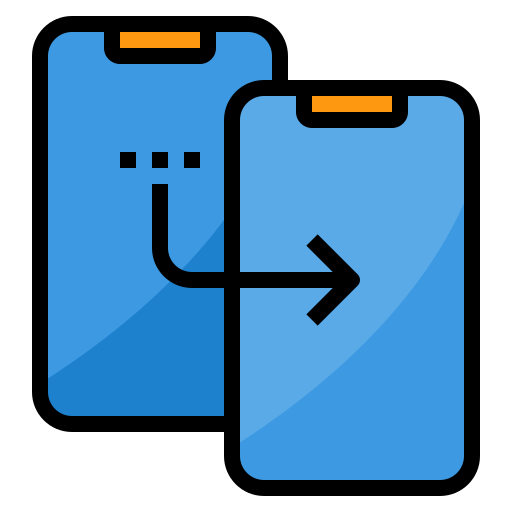
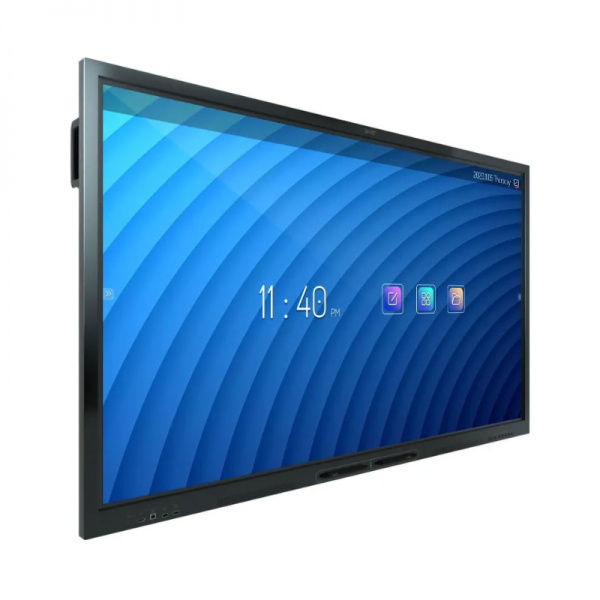
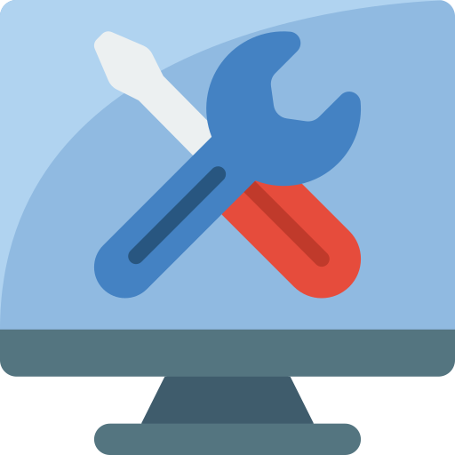

missions
MASTERISATION
Pendant mes deux années d'alternance, j'ai acquis une expertise significative dans la maîtrise de la masterisation.
durée de la mission : 2 ans
TICKETING
beaucoup de ticketing sur DOLIBARD et des prises en main a distance
durée de la mission : 2 ans
missions

ECRAN INTERACTIF DONVIEW
La deuxième année a été marquée par un changement significatif de mes missions, axées désormais sur la réparation et le diagnostic des écrans interactifs
durée de la mission : 2 ans

SYSTEMES
ma seconde mission a évolué vers les systèmes. J'ai commencé à travailler sur des tâches liées aux systèmes informatiques en collaboration avec le nouvel ingénieur réseau.
durée de la mission : 2 ans